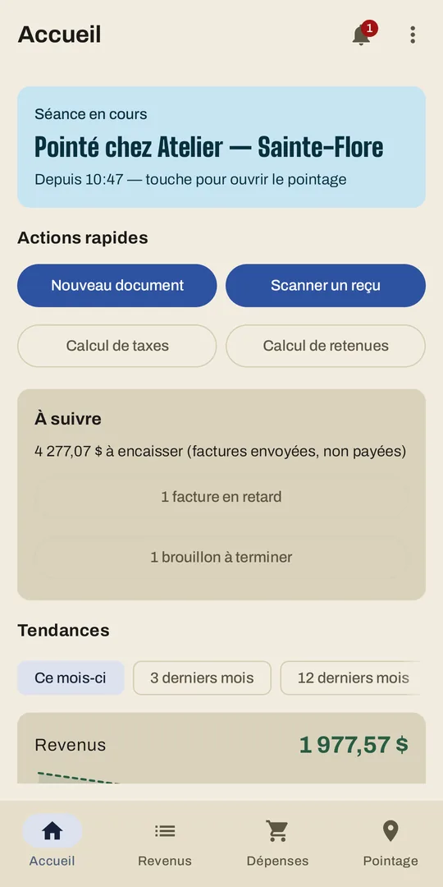
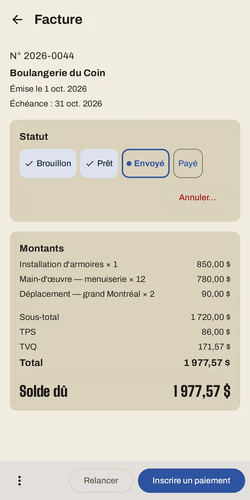
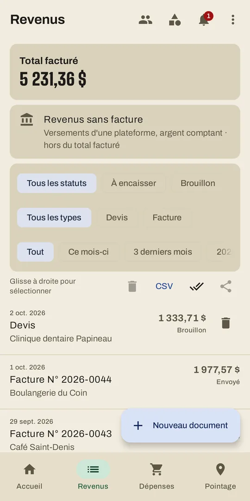
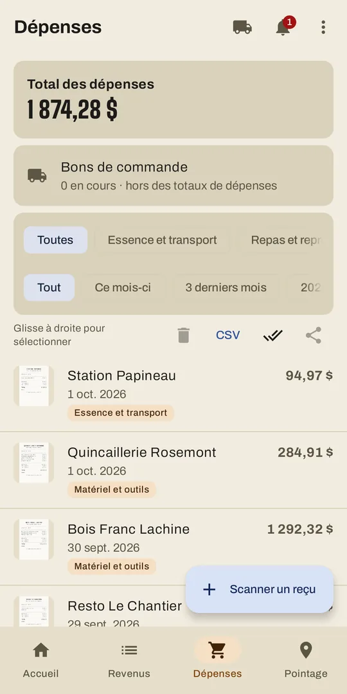
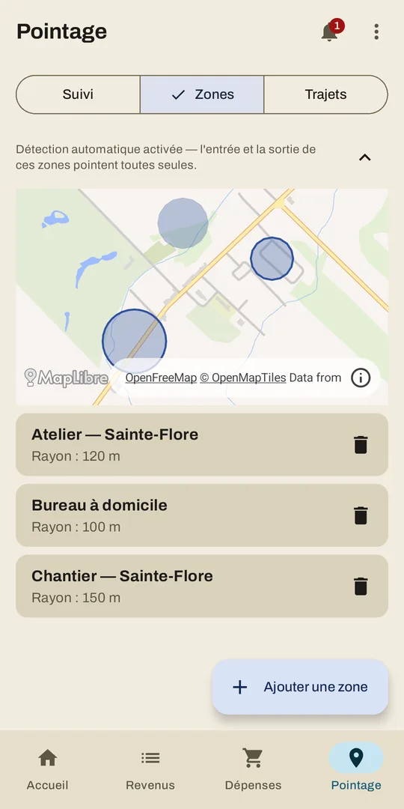

La paperasse du travailleur autonome, sur votre téléphone.
Du devis au fichier pour le comptable : factures, reçus, heures par zone, kilométrage, taxes et retenues. Conçu pour le Québec.
- Hors ligne
- Sans compte
- Sans abonnement
- Sans publicité


Ce que fait TAGO
Une seule application à la place du tableur, de la boîte à chaussures de reçus et du carnet dans le coffre à gants.

Facturation
- Soumissions et factures PDF avec votre logo, numérotées, TPS et TVQ calculées.
- Une soumission acceptée devient une facture en un geste.
- Acomptes et paiements partiels, chacun avec son reçu PDF.
- Relance d'une facture impayée, note de crédit pour corriger une facture émise, état de compte d'un client.
- Revenus sans facture (plateformes, comptant) comptés aussi.
- Pas encore inscrit aux taxes ? Factures sans TPS ni TVQ, avec un avis près du seuil de petit fournisseur.

Reçus et dépenses
- Photographiez un reçu, ou partagez-en plusieurs (photos, PDF) vers TAGO.
- Commerce, date et montants lus sur l'appareil : la photo n'est jamais envoyée.
- Doublon probable signalé avant d'enregistrer ; retours soustraits de vos dépenses.
- Chaque dépense porte sa ligne T2125 et TP-80, et sa part d'affaires.
- Fournisseurs et bons de commande d'achat en PDF.

Heures par zone et kilométrage
- Dessinez vos lieux de travail sur une carte et pointez d'un geste.
- Détection automatique d'arrivée et de départ en option, désactivée par défaut.
- Les heures d'un client sur une période s'ajoutent à une facture en un geste.
- Carnet de kilométrage par véhicule, compteur du 1er janvier et du 31 décembre avec photo, gratuit et sans limite.
- Avec Pro : un trajet mesuré par GPS. Seul le total est gardé, jamais le tracé.
Pour le comptable
- Classeur Excel de l'année ou d'un trimestre.
- Photos et PDF des reçus de la période dans un seul ZIP.
- Taxes et retenues estimées (impôt, RRQ, RQAP).
- Les lignes de votre déclaration TPS/TVQ.
- Relevés pour le crédit de maintien à domicile et aide aux relevés 24.
- L'année archivée en un ZIP lisible sans TAGO.
Sauvegarde
- Toutes vos données dans un fichier chiffré par une phrase secrète.
- À la demande ou automatiquement.
- Restauration sur un nouveau téléphone, et vérification d'une sauvegarde sans rien écraser.
- En option, une copie chiffrée dans votre Google Drive, illisible pour Google comme pour TAGO.
Calendrier
- En option, vos échéances fiscales dans le calendrier du téléphone : des dates, jamais de montant.
- Vos séances de pointage aussi, si vous le voulez.
Vos données restent chez vous
TAGO n'a pas de serveur et vous n'avez pas de compte à créer. Vos factures, reçus et heures vivent sur votre téléphone, et ce que vous exportez (PDF, Excel, sauvegarde) reste à vous, avec ou sans TAGO.
Ce que TAGO ne fait pas
- Aucune publicité.
- Aucun outil d'analytique ajouté par TAGO.
- Rien n'est vendu ni partagé.
- La lecture des reçus se fait sur l'appareil.
Les cinq échanges réseau
Il y en a cinq, tous énumérés dans la politique : la carte des zones (OpenFreeMap) ; des rapports d'erreur sans identifiant (Sentry) ; des mesures techniques que deux composants Google envoient d'eux-mêmes, sans le contenu de vos reçus ; et, si vous les activez, l'envoi de courriels par Brevo et la sauvegarde chiffrée sur votre Google Drive.
Loi 25
Politique de confidentialité intégrée à l'app, responsable des renseignements personnels désigné, et consentement explicite avant le premier pointage et avant la détection automatique.
Prix
Pas d'abonnement. L'application est gratuite, factures PDF et courriel compris ; TAGO Pro est un achat unique.
Gratuit
0 $
- Toutes les fonctions de base.
- Jusqu'à 10 fiches client, 25 documents et 25 reçus.
- Carnet de kilométrage sans limite.
- Sauvegarde chiffrée.
TAGO Pro
34,99 $ — achat unique par Google Play
- Clients, documents et reçus sans limite.
- Mesure des trajets par GPS, et un trajet proposé quand vous roulez.
- Récupérable sur un nouveau téléphone avec le même compte Google.
Obtenir TAGO
TAGO est en test sur Google Play pour Android. Pour participer au test, écrivez-nous à travailleurautonomego@gmail.com. Une version iOS est prévue.